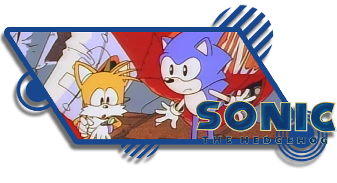

Welcome to the Paramount Sonic the Hedgehog Universe! This being the universe in which the Sonic the Hedgehog Film Series by Paramount Pictures occurs being home to 3 known planets - Earth, Mobius [1], and the Mushroom Planet. Sonic would reside on Planet Mobius under the care of Longclaw the Giant Owl before their home was ransacked by Pachacamacc and the Echidna Tribe seeking the location of the Master Emerald forcing Longclaw to send Sonic to Earth where he'd remain in isolated hiding for 7 years, told to escape to a Mushroom Planet should anyone seek to take his power - the loneliness takes it's toll on Sonic however who accidentally causes an Electro-Magnetic Pulse (EMP) that catches the Government's Attention who brings in Dr. Ivo Robotnik.
What is Canon?
Anything produced in a joint venture by Paramount Pictures and SEGA are canon to this universe, below is a list of all canon media to this universe.
List of Canon Media |
|---|
 |
 |
 |
 |
Artifacts/Energies
Anything produced in a joint venture by Paramount Pictures and SEGA are canon to this universe, below is a list of all canon media to this universe.
List of Artifacts/Energies |
|
|---|---|
Chaos Energy |
Chaos Energy is a powerful energy produced by Mobian and/or Mobian-Like beings, and is capable of enhancing it's users Physical Abilities. This energy appears to manifest in the form of a highly potent Bio-Electromagnetic energy and is powerful enough to create an Electromagnetic Pulse (or EMP) that renders entire cities left in a temporary blackout. Chaos Energy can be infused into objects and are infused into a Mobian's Body. Due to this Chaos Energy persists in things like their Quills or Fur even if plucked off of them, as such the Chaos Energy can be extracted from a sample and used by Non-Mobian entities to enhance their physical abilities, power machinery, and even extend their life-span beyond it's natural limit[2]. |
Chaos Emeralds |
The Chaos Emeralds are 7 Diamond-Cut Gems that resided on Planet Mobius, and are extremely powerful with it being said that on all 7 being brought together an ultimate power is created - one so powerful it lead the Owl Clan to hide them on Earth. Their power can be accessed with or without physical contact. The Chaos Emeralds appear to react to thoughts and emotion being a "power enriched by the heart" and can be absorbed by living beings - doing so results in the user obtaining a form that can only be described as "god-like" being granted abilities such as flight, enhanced innate talents, and turning thoughts into reality. |
The Master Emerald |
Forged by the Mobian Echidna Tribe, The Master Emerald is the result of combining the power of all 7 Chaos Emeralds by forging them into one gem - as such it's been said this gem has the power to build and destroy entire civilizations with ease, making it the most powerful weapon in the universe. The Master Emerald can turn its weilder's thoughts into reality just like the Chaos Emeralds that comprise it, and can also be absorbed by living beings making them "All-Powerful", "All-Seeing", and "All-Knowing" with it granting it's wielder the power to overthrow entire armies. Due to this it's thought the Master Emerald is the most powerful weapon in the universe making it's weilder nigh-unstoppable, for this reason the Giant Owl Clan of Mobius would wage war with the Echidna Tribe and seize the gem hiding it in the Labyrinth Temple on Earth, never disclosing it's location. |
Linked & Connected Universes
In TailsTube #5 - it's confirmed that the Sonic the Hedgehog series exists as a Multiverse, and in the Sonic the Hedgehog Multiverse - Universes fall under one of 3 classifications, Connected, Linked, and Related. Below is an explanation of the universe types and what they mean:
- Connected Universes: If a universe is connected to another that means one of the two is a "Core Universe" and as such events seen in the connected universe have occured in the connected Core Universe.
- Linked Universes: If a universe is linked to another that means it may borrow elements of a linked universe, at the same time element of that universe may bleed into the core Sonic the Hedgehog Video Game Universe.
- Related Universes: If a universe is related that simply means it exists as part of the Sonic the Hedgehog Series - elements from the core SEGASonic the Hedgehog Universe may exist such as the Chaos Emeralds but the context, events, and rules of that universe may differ. No elements of these universes bleed into the core SEGASonic the Hedgehog Universe
|
|
|---|---|
 |
In Sonic Frontiers - Sonic can achieve something known as a Power Boost on maxing out his Ring Count - in this state Sonic's Body appears to emit blue electricity much like this Universe's Sonic does when using his Chaos Energy.   |
|  | In the Knuckles TV Series, Wade Whipple - a rookie police officer in Green Hills, Montana is challenged to a duel by Bounty Hunter - Jack Sinclair after defeating him he takes his jacket and hat at prizes, he keeps the jacket but gives the hat to Knuckles. This hat appears to be almost identical to the one that the Knuckles wore in the Sonic OVA universe.   |
|
|
There are no universes connected to Paramount Sonic the Hedgehog as of now. |
|
Notes/References
- The Sonic the Hedgehog Film Novelization reveals Sonic's Planet of Origin to be named "Mobius" - however due to a franchise-wide mandate put in place by SEGA using the name "Mobius" as the name of a planet is banned in the Sonic Franchise - this was due to an incident long ago involving the Archie Sonic Comics.
- While you cannot name a Planet in the Sonic Series "Mobius" but the Planet may be refered to simply as "Sonic's World" which the film elects to do.
- This mandate is part of a series of mandates that did not always exist - only being established due to a writer on the Archie Sonic the Hedgehog Comics. Before-hand Planets could be called "Mobius" and often were in western regions due to this - it can be argued that the name "Mobius" is less banned and more censored when used in the context of a Planetary Name in the Sonic Franchise.
- Given the Novelization has the original intended name of Sonic's Planet of Origin in the films as "Mobius" and there isn't an official name for the planet outside "Sonic's World" or "Sonic's Island" I decided to refer to the planet under the originally intended name.
- Jeff Fowler stated that in a deleted scene in Sonic the Hedgehog 3, Gerald Robotnik would "Take a hit of a Shadow's Quill with the Chaos Energy inside it having a revitilizing effect" in esscence keeping Gerald alive to 110 Years of age.
- Even though Jeff Fowler states that the scene was scrapped there are scenes in the final film where he is zapped by Shadow's Quill much in the same fashion as Ivo Robotnik is with Sonic's in the first 2 Films as such it's unclear if this plot element is still in play or not: